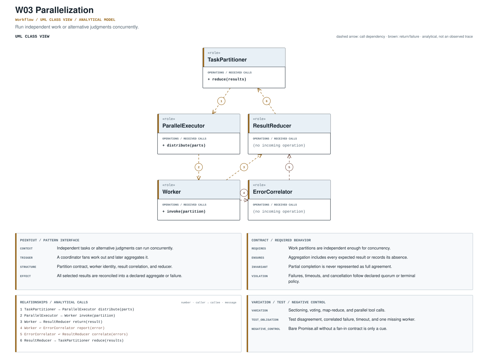

Parallelization
Run independent work or alternative judgments concurrently.
fan_out_fan_inRECORD STATUSCandidate · v0.1.0Pointcut
Where the mechanism applies. All four dimensions belong to the proposed match, not just its vocabulary.
- Context
- Independent tasks or alternative judgments can run concurrently.
- Trigger
- A coordinator fans work out and later aggregates it.
- Structure
- Partition contract, worker identity, result correlation, and reducer.
- Effect
- All selected results are reconciled into a declared aggregate or failure.
Protected contract
The obligation that clients, operators, and auditors should be able to rely on.
- Requires
- Work partitions are independent enough for concurrency.
- Ensures
- Aggregation includes every expected result or records its absence.
- Invariant
- Partial completion is never represented as full agreement.
- Violation
- Failures, timeouts, and cancellation follow declared quorum or terminal policy.
Negative control
Bare Promise.all without a fan-in contract is only a cue.
Variation & lifecycle
The hot spot is admitted only where the protected semantics survive.
Permitted variation
Sectioning, voting, map-reduce, and parallel tool calls.
Test obligation
Test disagreement, correlated failure, timeout, and one missing worker.
Evolution question
Did parallelism add explicit reducers and quorum semantics?
Analytical interaction model
A readable arrangement of roles and messages derived from the proposed specification.

This is an analytical model, not an observed trace and not evidence of implementation. Edge order is not a universal execution timeline.
Download diagram PDFEvidence & provenance
Each layer answers a different question. Do not substitute retrieval for review.
Source-located exemplar
A concrete source anchor is available for this proposed record. It is one exemplar, not evidence that all repositories—or every contract field—conform.
Review boundary: this candidate and its specification come from an AI-assisted study. Independent human validation remains open.
66.7% of repository families in the frozen panel have at least one current cue, historical cue, or canonical source layer. This is not confirmed prevalence.
Current lexical-cue repositories: 28 / 4186bd29878b30examples/agent_patterns/parallelization.py:7examples/agent_patterns/README.md:45Parallel alternatives with selection.
Exploratory retrieval cue Regex / v0.1.0
(?i)\b(?:fan[_-]?out|fan[_-]?in|parallel[_-]?(?:run|agent|workflow)|Promise\.all|asyncio\.gather)\bThis expression is a discovery instrument only. A match is a retrieval cue—not a confirmed implementation, pointcut match, or contract proof.